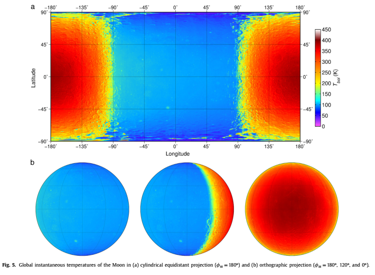
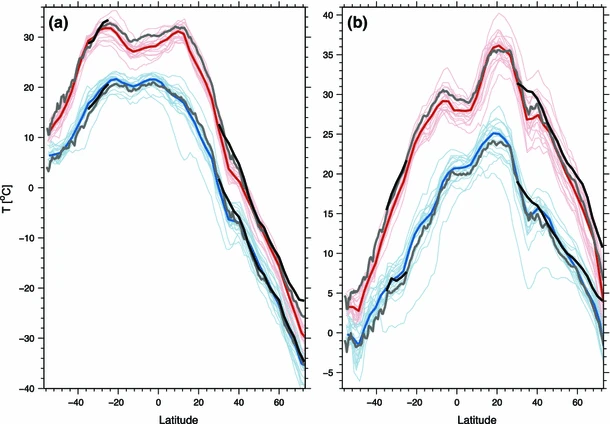

Planetary Climate
Zero-dimensional model: 2
Day/Night Changes

Williams et al., Icarus 2017
Earth Day/Night Changes
Lindvall and Svensson, Climate Dynamics 2014
For Planets
- "Aqua" planet
- Uniform Temperature
- Optically Thin Atmosphere
ICE!

Huge Difference!
$\alpha_{surf} \propto T_{surf}$
-
More interesting when $T_{surf} = f(\phi)$!